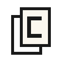

물의 세 가지 모습에서
수업의 질문을 발견하다.
대표 배치는 편집 레이아웃 예시이며 추천 품질이나 사람 검수의 증거가 아닙니다.
CURI / DESIGN OPTION 04 · 제안 전용
크림색 지면과 선명한 제목. 주제·원문·개인 기록을 한눈에 편집하는 교사의 자료실입니다.
모든 자료·시간·폴더는 가상 예시입니다. 실제 API·검색·개인 저장·확장 설치는 사용하지 않습니다.
대표 배치는 편집 레이아웃 예시이며 추천 품질이나 사람 검수의 증거가 아닙니다.
일치하는 예시 자료가 없습니다. 조건을 직접 바꿔주세요.
YOUR LESSON MATERIALS
이 시안 안에서 가져온 가상 자료만 표시합니다. 새로고침하면 초기화됩니다.
CHROME / SIDE PANEL
현재 영상 → 폴더 → 전체/구간 → 가져가기.
웹의 장식을 축소하지 않고 입력의 우선순위를 유지합니다.
기존 초안·위치별 기록을 지키는 것이 실제 적용의 전제입니다. 이 시안은 메모리 안에서만 작동합니다.
영상을 보면서 오른쪽 Curi 패널에서
폴더·구간을 정리합니다.

CURI04연결됨 · 가상 예시
현재 영상
실제 방송 아님 · 길이 08:30 예시
폴더와 범위를 확인하세요. 실제 저장하지 않습니다.
FOUNDATION / IDENTITY
좋은 자료에서,
다음 수업으로.
본문16px / 확장14px / 출처13px.
큰 제목과 필수 정보의 크기를 구분합니다.
01:20—02:30 / 03 MATERIALS
시스템 한국어 산세리프와 시간용 고정폭. 원본 글꼴은 가져오지 않습니다.
비활성 버튼은 상태 비교용이며 실제 요청을 실행하지 않습니다.

독립 작성 SVG 제안. 로고의 최소 크기·여백·배경 조합은 전체 가이드를 따릅니다.
GRID / INTERACTION
각 블록의 점유는 실제 콘텐츠 길이와 모바일 읽기 순서를 우선합니다.
| 폭 | 열 / 간격 | 배치 |
|---|---|---|
| 1200 이상 | 12 / 24px | 3+6+3, 자료 4×3 |
| 768–1199 | 8 / 20px | 자료 4×2 |
| 768 미만 | 4 / 16px | 1열, 주요 자료부터 |
원본 전환의 정확한 ms/easing은 실측하지 않았습니다. 이 시안은 Curi 제안값(상태120ms, 패널180ms)을 사용합니다.